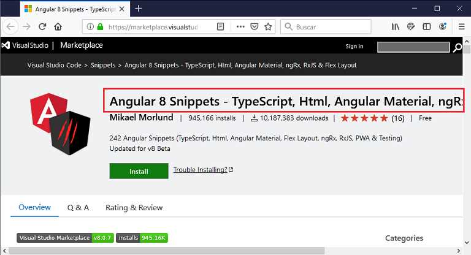
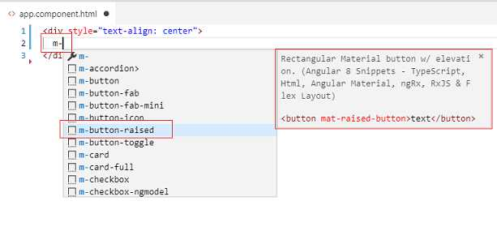
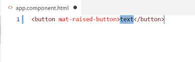
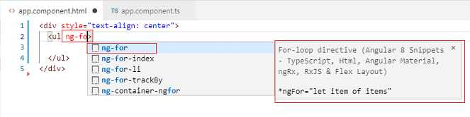
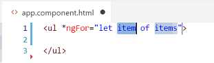
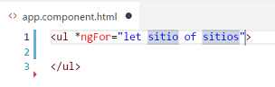

La complejidad actual en el desarrollo de aplicaciones web hace necesario disponer de herramientas que nos faciliten su construcción.
La cantidad de componentes creciente de Angular Material y su variedad de propiedades hacen necesario una gran cantidad de práctica para que lleguemos a dominarla y ser eficientes con el tiempo.
Al utilizar el editor VS Code podemos valernos de las extensiones especialmente desarrolladas para Angular.
La primer extensión que instalaremos con el objetivo de facilitar el desarrollo de aplicaciones que hagan uso de Angular Material es:
Angular 10 Snippets - TypeScript, Html, Angular Material, ngRx, RxJS & Flex Layout (bajar la última versión disponible): Los más de 2000000 de instalaciones nos muestran la cantidad de desarrolladores que utilizan Angular en la construcciones de aplicaciones web.
Una vez instalada la extensión disponemos de Intellisense para la codificación de las componentes Angular Material:
Cuando codificamos la plantilla HTML al escribir 'm-' nos aparece una lista con todas las componentes Angular Material y en segundo cuadro una descripción de la componente seleccionada y el trozo de código a generar.
Una vez confirmado el 'snippet' se agreda donde se encuentra el cursor el trozo de código:
Además si hay que configurar varias partes del trozo de código añadido mediante la tecla 'tabulación' vamos saltando a cada uno de dichos puntos.
La extensión que acabamos de instalar no solo nos facilita la creación de componentes Material sino que además nos ayuda en la codificación de directivas.
Supongamos que tenemos un vector con nombres de sitios webs definidos en el archivo *.ts:
import { Component } from '@angular/core';
@Component({
selector: 'app-root',
templateUrl: './app.component.html',
styleUrls: ['./app.component.css']
})
export class AppComponent {
sitios: string[] =["http://www.google.com",
"http://www.yahoo.com",
"http://www.bing.com"];
}
Luego cuando queremos mostrar los datos del vector podemos utilizar la extensión instalada para generar la directiva ng-for escribiendo 'ng-':
Luego de confirmar el 'snippet' nos muestra un nombre genérico para las variables del for:
Cambiamos cada nombre y presionamos la tecla 'tab':
Como podemos comprobar es una excelente herramienta para recordarnos los nombres de las directivas disponibles en Angular y generar en forma automática un trozo de código que requiere solo que lo configuremos a nuestras necesidades.